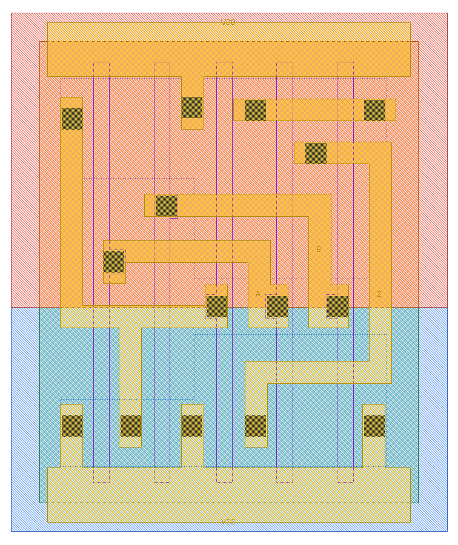
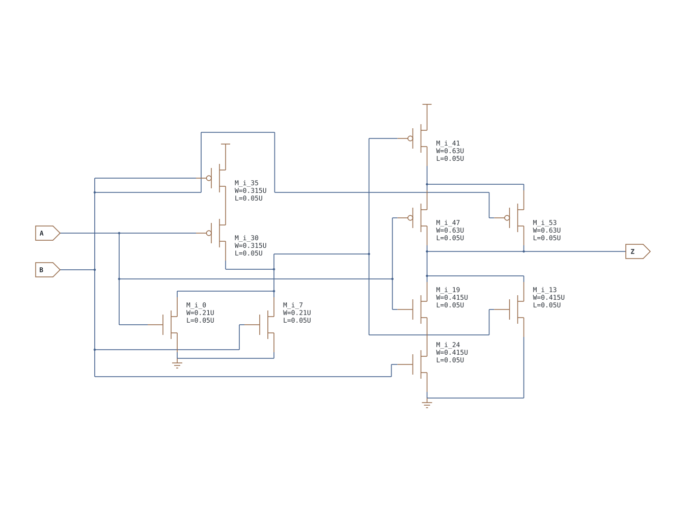
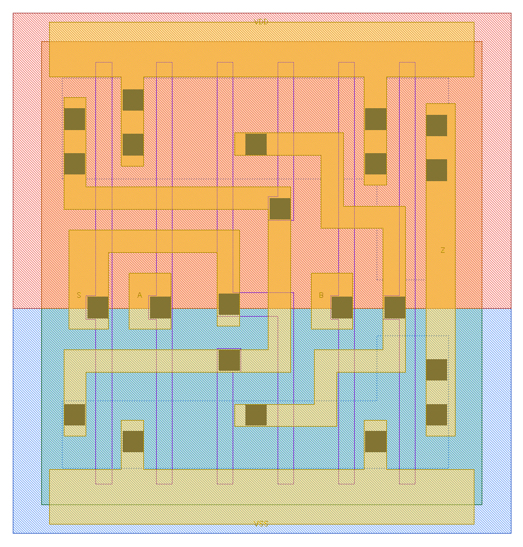
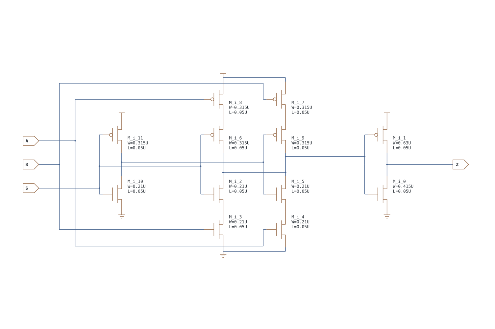
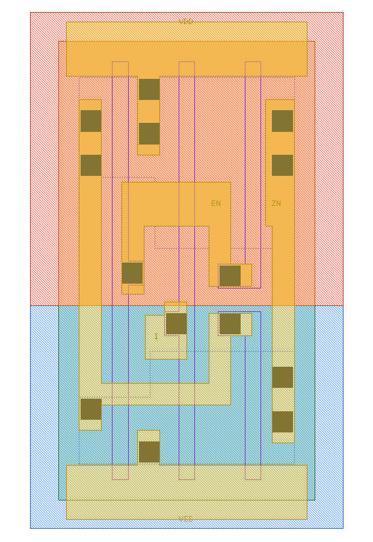
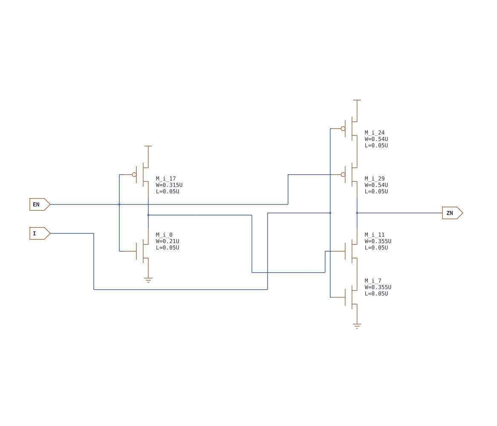
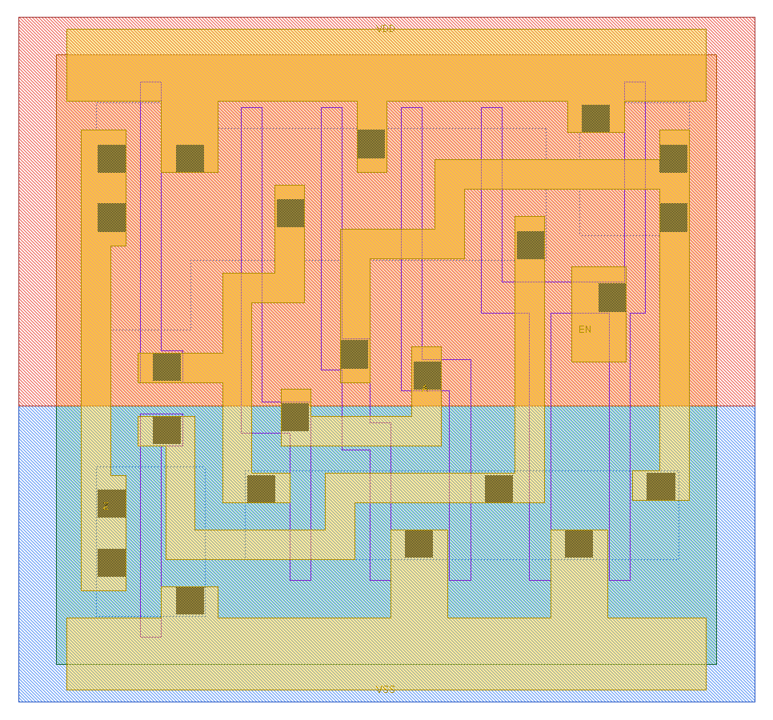
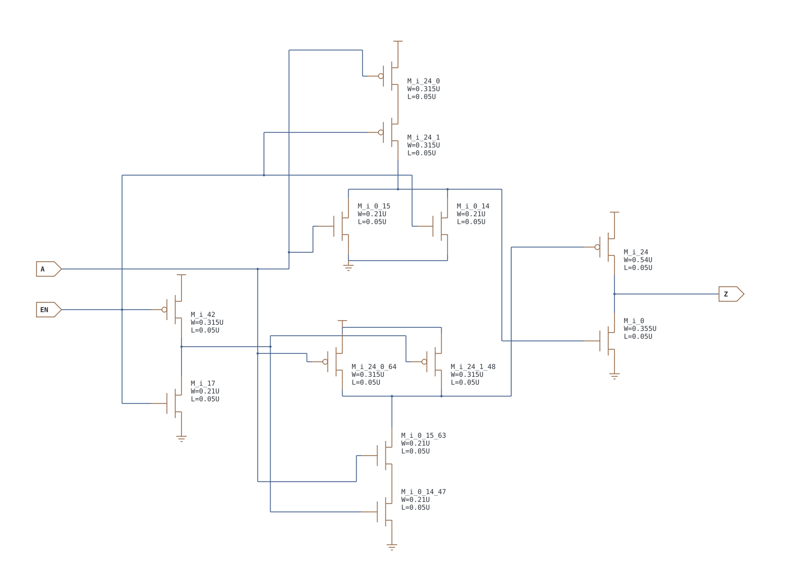

第 15 章 比较、选择、缓冲与三态单元
从“给输出一个确定值”扩展到选择路径与释放驱动权
15.1 XOR/XNOR、MUX2 与缓冲器
| 子类 | 它真正回答的问题 | 本库成员 | 典型应用 |
|---|---|---|---|
| XOR/XNOR | 两位是否不同/相同 | XOR2_X1/X2、XNOR2_X1/X2 | 加法器和位、奇偶校验、比较、条件翻转 |
| MUX | 选择信号决定哪路数据到输出 | MUX2_X1/X2 | 旁路、模式选择、反馈/新值选择 |
| 普通/时钟缓冲 | 逻辑不变，但重新提供驱动 | BUF_X1…X32、CLKBUF_X1/X2/X3 | 扇出与长线修复、时钟树 |
XOR2 / XNOR2
| A | B | XOR2 Z | XNOR2 ZN |
|---|---|---|---|
| 0 | 0 | 0 | 1 |
| 0 | 1 | 1 | 0 |
| 1 | 0 | 1 | 0 |
| 1 | 1 | 0 | 1 |
XOR/XNOR 不再是单一串并联静态 CMOS 的最简单形态，通常需要输入反相、复合网络或传输结构。不能只凭两条 Poly 就猜输出。
| 例子 | 方程 | 输出含义 |
|---|---|---|
| 半加器的和 | S=A⊕B | 恰有一个输入为 1 时，和位为 1 |
| 单比特比较 | match=A XNOR B | A、B 相同就输出 1；多比特相等还要把各位 match 做 AND |
| 条件翻转 | Y=D⊕toggle | toggle=0 原样传递，toggle=1 将 D 反相 |
| 偶校验 | p=d0⊕d1⊕d2⊕d3 | 本库只有 XOR2，需要组成树；树形通常比长链更利于平衡延迟 |
MUX2
Z = (!S·A) + (S·B)，即 S=0 选 A，S=1 选 B：
| S | A | B | Z |
|---|---|---|---|
| 0 | 0 | 0 | 0 |
| 0 | 0 | 1 | 0 |
| 0 | 1 | 0 | 1 |
| 0 | 1 | 1 | 1 |
| 1 | 0 | 0 | 0 |
| 1 | 0 | 1 | 1 |
| 1 | 1 | 0 | 0 |
| 1 | 1 | 1 | 1 |
MUX2 的应用实例
| 场景 | A | B | S | Z |
|---|---|---|---|---|
| 算法旁路 | processed_data | raw_data | bypass | bypass=0 选处理结果，=1 选原始数据 |
| 寄存器保持/更新 | Q(previous) | new_value | load | load=0 保持旧值，=1 装入新值；MUX 输出再接 DFF |
| 功能/测试数据选择 | D | SI | SE | SE=0 走功能数据，=1 走扫描数据；SDFF 内部就包含这种选择意图 |
以“寄存器保持/更新”为例，MUX 自己不保存状态；它只决定 DFF 下一次采样看到 Q 反馈还是 new_value。把 MUX 与 DFF 分开理解，才能看清组合路径和时序边界。
{kind=link}

{kind=link}

{kind=link}

{kind=link}

BUF / CLKBUF
| A | BUF/CLKBUF Z |
|---|---|
| 0 | 0 |
| 1 | 1 |
功能都为 Z=A。CLKBUF 的名字表示它面向时钟负载优化，并不创造新的 Boolean 功能；实际差异要看驱动级、输入电容、rise/fall、占空比失真和 Liberty characterization。
BUF 的三个常见用途：在长布线上中继以修复转换时间；隔离一个小门与许多后级输入；为后端工程师提供可调整的驱动级。CLKBUF 则用于时钟树分支和叶节点，目标不仅是“到得快”，还包括不同端点时钟到达差、上/下沿和占空比。不要因 Boolean 功能相同就随意互换两者。
15.2 三态单元：Z 不是逻辑 0
| 这一类解决什么 | 本库成员 | 适合的场景 | 首要风险 |
|---|---|---|---|
| 使输出在驱动 0、驱动 1 和高阻之间切换 | TINV_X1；TBUF_X1/X2/X4/X8/X16 | 受严格控制的共享总线、特定宏接口 | 两个驱动同时开启会争用；全部关闭会浮空；许多内部网络更适合 MUX |
高阻态 Z 表示输出级的主动上拉、下拉通路都关闭；真实器件仍有漏电与寄生，不是数学上无限电阻。它允许共享总线，但若没有其他驱动，节点会浮空。CDL 的 *.EQN 只写数据极性，无法完整表达高阻控制；必须读晶体管网或 Liberty。
TINV_X1：低有效使能的三态反相器
| EN | I | ZN |
|---|---|---|
| 0 | 0 | 1 |
| 0 | 1 | 0 |
| 1 | 0 | Z |
| 1 | 1 | Z |
从本地 6 管网表可见：EN=0 时上拉/下拉受 I 控制，EN=1 时两路都关断。因此尽管端口名叫 EN，本实现是低有效。使用前应以晶体管仿真/Liberty 再确认，不能由 pin 名猜极性。
TBUF_X1/X2/X4/X8/X16：低有效使能的三态缓冲器
| EN | A | Z |
|---|---|---|
| 0 | 0 | 0 |
| 0 | 1 | 1 |
| 1 | 0 | Z |
| 1 | 1 | Z |
{kind=link}

{kind=link}

{kind=link}

{kind=link}

*.EQN Z=A 漏掉 EN。共享总线例子：三个状态都要验证
假设 TBUF0 和 TBUF1 的输出接到同一根 bus，本库 EN 为低有效：
| EN0 | EN1 | 总线状态 | 工程含义 |
|---|---|---|---|
| 0 | 1 | bus=A0 | 只有驱动器 0 开启，合法 |
| 1 | 0 | bus=A1 | 只有驱动器 1 开启，合法 |
| 1 | 1 | Z/浮空 | 没有驱动；若后级仍采样，值可能不确定 |
| 0 | 0 | 争用风险 | 若 A0≠A1，一路拉高、一路拉低，产生大电流且逻辑不确定 |
因此控制逻辑必须保证两个低有效使能最多只有一个为 0，并验证“全关闭”期间总线是否有 keeper、上拉/下拉或协议保证。对普通内部数据选择，MUX2 会始终给出确定的 0/1，通常更容易综合、静态时序分析和形式验证。TINV 适合在使能同时需要反相的接口；TBUF 则保持数据极性。
15.3 四位比较、校验与条件取反：同一 XOR/XNOR 的三种用法
比较两个四位数相等，可先对对应位做 XNOR，再对四个结果做 AND。比如 A=1010、B=1000，逐位 XNOR 为 1101，与结果为 0，因此不相等。把四个 XOR 再做 OR，则得到“不相等”；它们的极性相反，适合不同后级逻辑。
偶校验位常取数据所有位的 XOR：数据 1011 有三个 1，异或为 1，把校验位 1 附上后总共有四个 1。接收端把数据与校验位再次异或，结果为 0 是校验关系成立，不代表能证明“完全没有错误”：偶数个位翻转可能抵消。XOR 在这里实现的是一条特定数学关系，不是通用纠错功能。
条件取反 Y=D⊕T 是另一用法。T=0 时 Y=D，T=1 时 Y=!D。在计数器或加减法结构里会遇到这种条件翻转，但一个 XOR 没有存储能力，不能自己累计状态。
15.4 MUX 的数据弧与选择弧要分开测
| 待观察的路径 | 其他输入设置 | 预计结果 | 若输出不翻转 |
|---|---|---|---|
| A→Z | S=0 | Z 跟随 A | 先确认是否错误地选中了 B |
| B→Z | S=1 | Z 跟随 B | 先确认选择极性与端口顺序 |
| S→Z，同向 | A=0，B=1 | S↑ 导致 Z↑ | 观察 S 实际波形、内部互补选择与恢复级 |
| S→Z，反向 | A=1，B=0 | S↑ 导致 Z↓ | 不能把另一数据条件下的弧方向照抄过来 |
| S 翻转但不应改 Z | A=B | 稳态输出保持相同数据 | “不翻转”在这里是正确功能；瞬态仍可能有毛刺 |
这解释了为什么选择引脚的时序性质可能是 non_unate：相同 S 边沿，在不同数据状态下让输出往不同方向变化。non_unate 不是“没有时序关系”，而是不能用一个固定正/负方向概括所有条件。
15.5 传输门与 TBUF 为什么不是同一个东西
传输门用并联 NMOS/PMOS 建立受控通路，开启时信号可以在两端传播；真实能力受电压范围、导通电阻与控制时序限制。它没有像 CMOS 反相输出级那样独立恢复并驱动电平。TBUF 则有指定输入与输出，开启时输出同输入、关闭时输出高阻，属于受控驱动器。TINV 在开启时还会反相。
某个 MUX 可以用传输门实现，也可以用静态逻辑实现；功能表相同不代表晶体管拓扑相同。本文本地 CDL 的具体实现要对照实际电路图，不能把一个概念 TG 图贴上去就声称对应所有 MUX2_X1。
15.6 从真实 CDL 证明 TINV 的低有效使能
在 TINV_X1 的真实 CDL 中，M_i_0 与 M_i_17 组成 EN 的反相器，产生 net_000=!EN。输出下拉链为 ZN—M_i_11—net_001—M_i_7—VSS，栅分别是 net_000 和 I；上拉链为 VDD—M_i_24—net_002—M_i_29—ZN，栅分别是 I 和 EN。
| 控制 | 下拉使能管 M_i_11（N） | 上拉使能管 M_i_29（P） | 结果 |
|---|---|---|---|
| EN=0，net_000=1 | 开 | 开 | I 决定哪条完整电源通路导通，ZN=!I |
| EN=1，net_000=0 | 关 | 关 | 两条输出驱动通路都被切断，ZN 为高阻 |
这里 I 接的是数据晶体管的栅，不是像 TG 那样把数据从扩散端传过去。也不是“EN=0 时四只输出管全开”：两只使能管开了，数据管还由 I 决定。
15.7 两只三态驱动器共享总线：把争用算出来
本库 TBUF 的 EN 是低有效：EN=0 驱动，EN=1 高阻。下表使用两只 TBUF0/1，各自的数据为 A0/A1；EN0/EN1 名字容易让人误以为高有效，必须服从本库功能定义。
| EN0 | EN1 | 总线状态 | 工程含义 |
|---|---|---|---|
| 0 | 1 | 由 A0 驱动 | 只有驱动器 0 拥有驱动权 |
| 1 | 0 | 由 A1 驱动 | 只有驱动器 1 拥有驱动权 |
| 1 | 1 | 两个输出都高阻 | 总线电压取决于其他驱动、保持结构、电荷和漏电 |
| 0 | 0 | A0=A1 时可能同向驱动；A0≠A1 时争用 | 相反值会形成强电流通路，不能只说“逻辑 X 无所谓” |
即使控制逻辑保证稳态一选一，两个使能转换也可能短时重叠。释放与接管之间需要怎样的协议，取决于系统和工具流程。内部普通数据选择通常使用 MUX 更容易约束，但不要由此得出“三态永远不能用”的结论。
从稳态表走到换手时序
令 A0=0、A1=1，原来 EN0=0、EN1=1。若新驱动器先开而旧驱动器后关，中间会经过 EN0=EN1=0，形成 VDD→新驱动器→总线→旧驱动器→VSS 的争用通路。若先关旧、后开新，中间经过 11，总线暂时没人驱动；这可以避免主动争用，但后级必须等待新数据有效再采样，或按系统要求配置保持器。只有前后两个稳定状态合法，并不证明换手过程合法。使能到高阻、使能到有效输出本身也有延迟，应读对应三态时序弧。
- 用 XOR2/XNOR2 和基本门分别实现四位相等与不等检测。
- S↑ 时 Z 没变，一定是 MUX 故障吗？列出一个正确情况。
- EN0=EN1=0、A0=0、A1=1 时，为什么问题不只是读到了错误数字？
答案
① 相等为逐位 XNOR 后 AND，不等为逐位 XOR 后 OR。② 不一定，例如 A=B=1，稳态 Z 始终 1。③ 两个驱动器分别拉低和拉高，造成争用电流、中间电平与可靠性风险；不能拿仿真的未知符号替代电气分析。